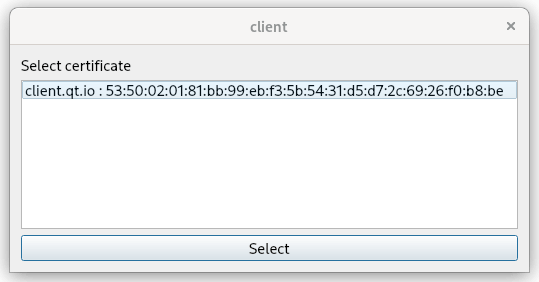
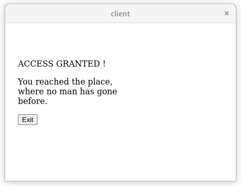

WebEngine Widgets Client Certificate Example
A simple client certificate authentication scenario using Qt WebEngine and QSslServer.

In this example we are going to show a client certificate authentication workflow. The presented authentication scenario can be for example implemented for an embedded device, which provides a web interface to handle its functionality. The administrator uses the Qt WebEngine powered client to maintain the embedded device and has a custom SSL certificate to authenticate. The connection is encrypted with SSL sockets. The embedded device uses a QSslSocket to handle the authentication and the encryption. This way the administrator does not have to enter any credentials and just needs to select a proper certificate that is recognized by the device.
In the example we focus on a very simple and minimalistic approach to demonstrate the workflow. Note that QSslSocket is a low level solution as we do not have to run a full-blown HTTPS server on the resource limited embedded device.
Creating Certificates
The example comes with certificates already generated, but let's see how to generate new ones. We create certificates for the server and the client using OpenSSL tooling.
First, we create the certificate signing request CSR and sign it. We will use a CA private key to sign and issue both local certificates for the client and the server.
openssl req -out ca.pem -new -x509 -nodes -keyout ca.key
Note: Specify the -days option to override the default certificate validity of 30 days.
Now, let's create two private keys for our client and a server:
openssl genrsa -out client.key 2048
openssl genrsa -out server.key 2048
Next we need two certificate signing requests:
openssl req -key client.key -new -out client.req
openssl req -key server.key -new -out server.req
Let's issue now both certificates from CSRs:
openssl x509 -req -in client.req -out client.pem -CA ca.pem -CAkey ca.key
openssl x509 -req -in server.req -out server.pem -CA ca.pem -CAkey ca.key
The client certificate subject and the serial number will be displayed for selection during authentication. The serial number can be printed with:
openssl x509 -serial -noout -in client.pem
Implementing the Client
Now we can implement our web browser client.
We start by loading our certificate and its private key and creating QSslCertificate and QSslKey instances.
QFile certFile(":/resources/client.pem");
certFile.open(QIODevice::ReadOnly);
const QSslCertificate cert(certFile.readAll(), QSsl::Pem);
QFile keyFile(":/resources/client.key");
keyFile.open(QIODevice::ReadOnly);
const QSslKey sslKey(keyFile.readAll(), QSsl::Rsa, QSsl::Pem, QSsl::PrivateKey, "");
Now we add the certificate and its private key to QWebEngineClientCertificateStore.
QWebEngineProfile::defaultProfile()->clientCertificateStore()->add(cert, sslKey);
To handle certificates we need to create an instance of QWebEnginePage and connect to two singals QWebEnginePage::certificateError and QWebEnginePage::selectClientCertificate. The first one is only needed as our self-signed server certificate will trigger a certificate error, which has to be accepted to proceed with the authentication. In production environments self-signed certificates are not used, therefore in this example we handle QWebEngineCertificateError just to avoid providing proper certificates. Note the private key is a secret and should never be published.
QWebEnginePage page;
QObject::connect(&page, &QWebEnginePage::certificateError,
[](QWebEngineCertificateError e) { e.acceptCertificate(); });
The handling for QWebEnginePage::selectClientCertificate simply displays QDialog with QListWidget showing a list of client certificates to choose from. The user selected certificate is then passed to the QWebEngineClientCertificateSelection::select call.
QObject::connect(
&page, &QWebEnginePage::selectClientCertificate, &page,
[&cert](QWebEngineClientCertificateSelection selection) {
QDialog dialog;
QVBoxLayout *layout = new QVBoxLayout;
QLabel *label = new QLabel(QLatin1String("Select certificate"));
QListWidget *listWidget = new QListWidget;
listWidget->setSelectionMode(QAbstractItemView::SingleSelection);
QPushButton *button = new QPushButton(QLatin1String("Select"));
layout->addWidget(label);
layout->addWidget(listWidget);
layout->addWidget(button);
QObject::connect(button, &QPushButton::clicked, [&dialog]() { dialog.accept(); });
const QList<QSslCertificate> &list = selection.certificates();
for (const QSslCertificate &cert : list) {
listWidget->addItem(cert.subjectDisplayName() + " : " + cert.serialNumber());
}
dialog.setLayout(layout);
if (dialog.exec() == QDialog::Accepted)
selection.select(list[listWidget->currentRow()]);
else
selection.selectNone();
});
Finally, we create a QWebEngineView for our QWebEnginePage, load the server URL, and show the page.
QWebEngineView view(&page);
view.setUrl(QUrl("https://localhost:5555"));
view.resize(800, 600);
view.show();
Implementing the Server
For our embedded device we will develop a minimalistic HTTPS server. We can use QSslServer to handle incoming connections and to provide an QSslSocket instance. To do that, we create an instance of a QSslServer and, similarly to our client setup, we load a server certificate and its private key. Next, we create QSslCertificate and QSslKey objects accordingly. Additionally, we need a CA certificate so the server can validate the certificate presented by the client. The CA and local certificate are set to QSslConfiguration and used later by the server.
QSslServer server;
QSslConfiguration configuration(QSslConfiguration::defaultConfiguration());
configuration.setPeerVerifyMode(QSslSocket::VerifyPeer);
QFile keyFile(":/resources/server.key");
keyFile.open(QIODevice::ReadOnly);
QSslKey key(keyFile.readAll(), QSsl::Rsa, QSsl::Pem, QSsl::PrivateKey);
configuration.setPrivateKey(key);
QList<QSslCertificate> localCerts = QSslCertificate::fromPath(":/resources/server.pem");
configuration.setLocalCertificateChain(localCerts);
QList<QSslCertificate> caCerts = QSslCertificate::fromPath(":resources/ca.pem");
configuration.addCaCertificates(caCerts);
server.setSslConfiguration(configuration);
Next, we set the server to listen for incoming connections on port 5555
if (!server.listen(QHostAddress::LocalHost, 5555))
qFatal("Could not start server on localhost:5555");
else
qInfo("Server started on localhost:5555");
We provide a lambda function for the QTcpServer::pendingConnectionAvailable signal, where we implement handling for incoming connections. This signal is triggered after authentication has succeeded and socket TLS encryption has started.
QObject::connect(&server, &QTcpServer::pendingConnectionAvailable, [&server]() {
QTcpSocket *socket = server.nextPendingConnection();
Q_ASSERT(socket);
QPointer<Request> request(new Request);
QObject::connect(socket, &QAbstractSocket::disconnected, socket,
[socket, request]() mutable {
delete request;
socket->deleteLater();
});
The Request object used above is a simple wrapper around QByteArray as we use QPointer to help with memory management. This object gathers incoming HTTP data. It is deleted when the request has completed or a socket has been terminated.
struct Request : public QObject { QByteArray m_data; };
The reply for the request depends on the requested URL, and it is sent back through the socket in form of a HTML page. For the GET root request the administrator sees the Access Granted message and an Exit HTML button. If the administrator clicks it, the client sends another request. This time with the /exit relative URL, which it turn triggers the server termination.
QObject::connect(socket, &QTcpSocket::readyRead, socket, [socket, request]() mutable {
request->m_data.append(socket->readAll());
if (!request->m_data.endsWith("\r\n\r\n"))
return;
socket->write(http_ok);
socket->write(html_start);
if (request->m_data.startsWith("GET / ")) {
socket->write("<p>ACCESS GRANTED !</p>");
socket->write("<p>You reached the place, where no one has gone before.</p>");
socket->write("<button onclick=\"window.location.href='/exit'\">Exit</button>");
} else if (request->m_data.startsWith("GET /exit ")) {
socket->write("<p>BYE !</p>");
socket->write("<p>Have good day ...</p>");
QTimer::singleShot(0, &QCoreApplication::quit);
} else {
socket->write("<p>There is nothing to see here.</p>");
}
socket->write(html_end);
delete request;
socket->disconnectFromHost();
});
To run the example, start the server and then the client. After you select the certificate, the Access Granted page is displayed.
